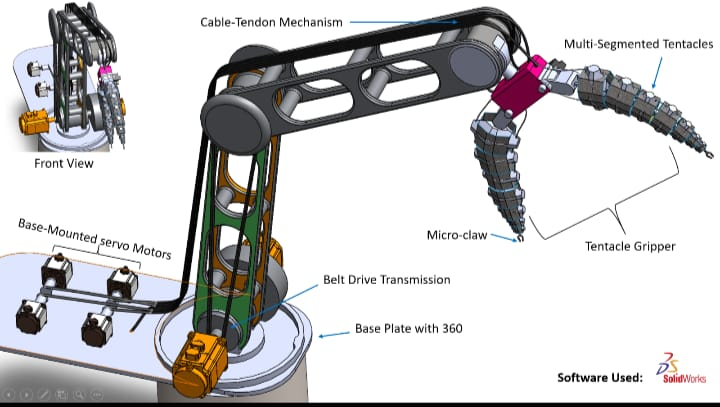
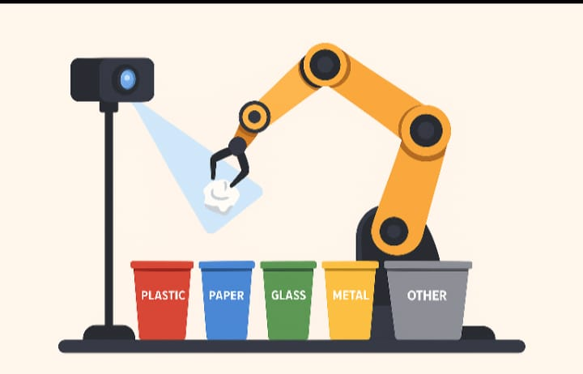
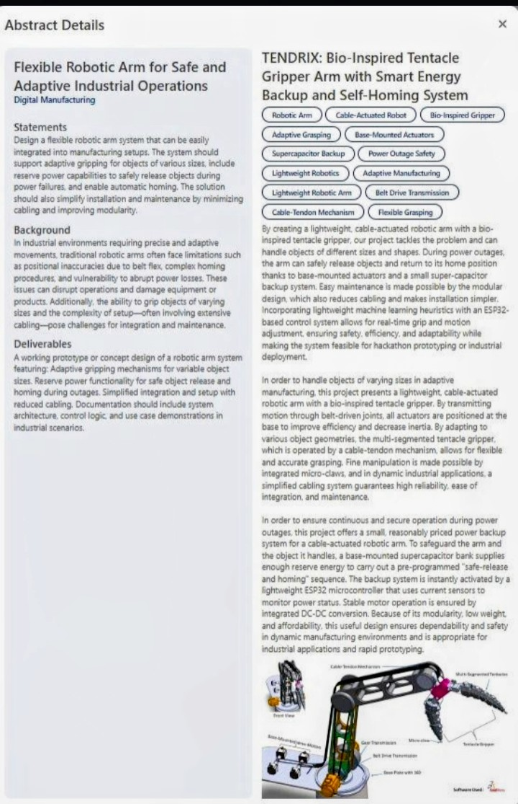

TENDRIX is a bio-inspired cable-tendon robotic arm built around a multi-segment tentacle gripper — with ML-assisted grasping and a supercapacitor-backed emergency system that safely releases payloads and homes itself the instant power drops out.

"How can robotic manipulators safely handle unexpected power outages while maintaining adaptive grasping capability for objects of varying geometry and fragility?"
Manufacturing lines increasingly hand glass, electronics, and irregular parts to rigid manipulators. Traditional arms have no graceful failure mode — a power cut is a hard stop, and hard stops near fragile or moving stock are how products, equipment, and people get hurt.
TENDRIX was built to answer that gap directly: mechanical adaptability for the grasp, and a deliberate emergency architecture for the failure.
Everything downstream — the control logic, the emergency behavior, the manufacturability — follows from where the actuators live and how the gripper touches the object.
Modeled on octopus tentacle mechanics, the gripper conforms around an object's surface instead of relying on a small number of rigid contact points.
Actuators stay base-mounted rather than riding out near the gripper — motion is transmitted down the arm through cable-tendon and belt-drive transmission.
A single, ordered path from perception to grasp — each stage handing off exactly one decision to the next.
A base-mounted supercapacitor bank supplies enough reserve energy to execute a pre-programmed safe-release-and-homing sequence the instant power is lost — monitored continuously by current sensors on an ESP32 controller.
Lightweight machine-learning heuristics run on-device for real-time grip and motion adjustment, tuned for hackathon-grade prototyping through to industrial deployment.


Founder of SHUDDH. Working across computer vision, embedded systems, and sustainable automation, with a research-first approach to hardware.